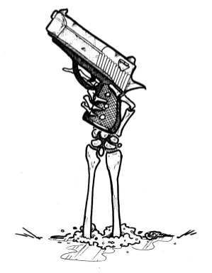
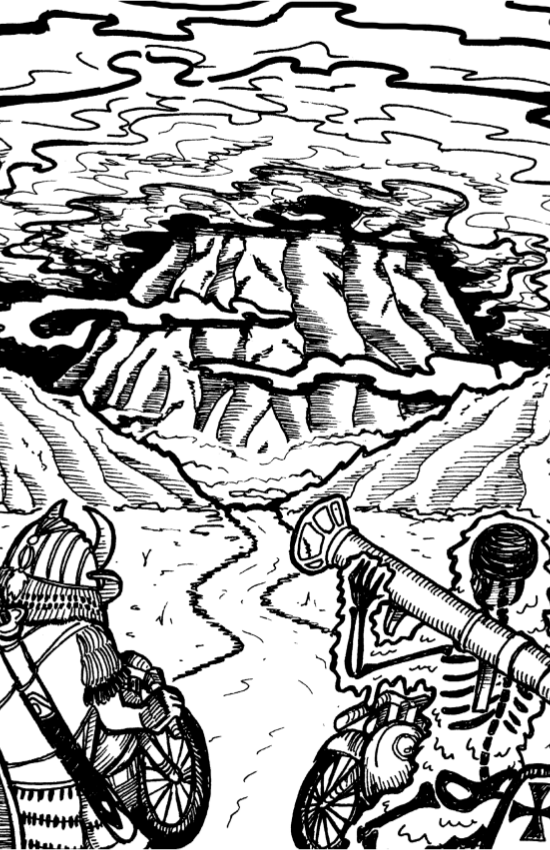
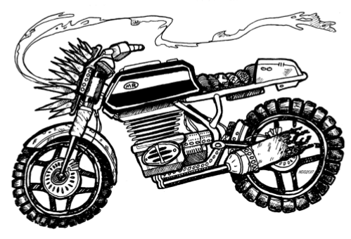
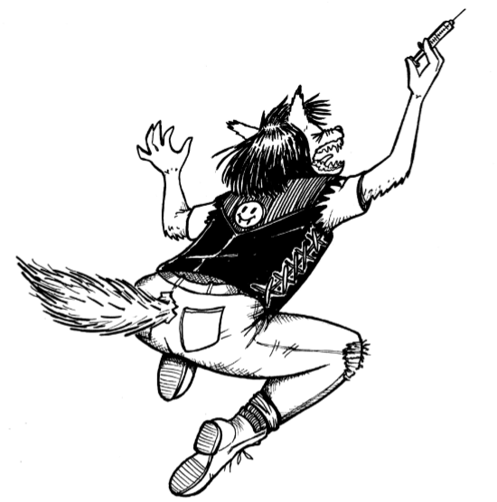

Midnight Riders
Developed by
Astrid Cook-Dail, Stephen Dietrich, R. Scott Frawley, and Michael McMahon
Art by
Nicole Dutram
Copyright © 2017 Ghost City Games

This work is licensed under the Creative Commons Attribution-ShareAlike 4.0 International License. To view a copy of this license, visit: http://creativecommons.org/licenses/by-sa/4.0/
Art © 2017 Nicole Dutram. Used with permission. Contact the artist via e-mail: dutram.nd@gmail.com.
For ordering information and requests, e-mail: info.ghostcitygames@gmail.com
A special thank you to Philip Cibulka, John Davis, Jacob Kayser, C. Steven Lobser, Phil Locey, and Dan Meyer.
The authors owe a debt to the game Black Hole Girls and its creator, Ewen Cluney, as sources of inspiration. Many mechanics and principles of Black Hole Girls have been reused or modified to build Midnight Riders.
PRELUDE
Under the white light of the full moon, two motorcycles race down a long stretch of desert road. The trailing biker builds speed and draws a sawed-off shotgun from her saddle bag. She fires at the leading biker, sending him flying into the sand. She slides to a stop and hops off her bike to finish the job. She steadies her aim at the man who is now collapsed on all fours in a massive cloud of dust. Strangely, his silhouette now seems bigger. The dust settles and the man looks out with glowing eyes. He howls wildly at the moon and lunges for the kill...
INTRODUCTION
In Midnight Riders, everyone role-plays her own Player Character (PC) who is a member of a rival biker gang and undergoing monstrous transformations. Ghosts, vampires, psychics, werewolves, and aliens are not unheard of in this game’s world. Think Sons of Anarchy meets Monster Mash as a point of reference for the game’s tone.
OBJECTIVE
Midnight Riders is a competitive role-playing game (RPG). You will aim to climb the ranks of your own gang and eliminate all rival threats from the other PCs. Your street smarts and your paranormal abilities will help you on your way to the top. Over the course of six Events, you will track your PC’s changing social standing, referred to as Reputation, and her evolving beastly powers, referred to as Madness. If a single player has both the highest Reputation and Madness scores at the end of the game, that player automatically wins. Otherwise, a final round, Hell to Pay, will take place after the sixth Event to determine the story’s conclusion.
SETUP
To play, you will need D4, D6, D8, D10, and D12 dice and a way to record your character’s stats, such as pen and paper. Start your PC at 0 Reputation and 0 Madness. Begin the game by describing your PC’s history, personality, gang life, and the world in which your Events will take place. Next, create a backstory that explains how your character possesses some supernatural traits. Once everyone has agreed upon the setting and cast of characters, players perform the first d12 roll-off to determine turn order. The determined first player rolls a d4 and d12 against the Happenings table (pg14) for the first time and the game begins with the first player’s Scene in the first Event.
TURN ORDER
At the beginning of each Event, all players roll a d12. Turn order follows highest roll descending to lowest roll. The player with the highest roll is labeled the first player for that Event. The first player is responsible for rolling against the Happenings table (pg14) for that Event and then establishing the first Scene.
SCORING
You will aim to gain points whenever your PC is involved in a Scene, either in Scenes you describe starring your PC or in Scenes other players describe that involve your PC. The number of points you stand to win is determined by the type of opponent you battle and your own Madness or Reputation score: the higher your score, the higher the die you will roll to reflect your growing powers. Conversely, the lower your score, the lower the die you will roll in Scenes. See Table 1 on opposite page.
There are two types of opponents: PCs or NPCs (Non-Player Characters). PCs are other players’ rival gang members battling for highest Madness and Reputation. NPCs are other characters temporarily played by a player in a Scene and are assigned a die depending on their difficulty. Teens, petty thieves, and bystanders are examples of d4 NPCs. Gang members and police are examples of d6 NPCs. Supernatural creatures and slayers are examples of the highest NPC die, D8. You score points at the climax of a Scene’s conflict when PCs roll their respective dice to determine a winner. If a PC loses a roll against an NPC, stay at the same score. If a PC loses a roll against a PC, the loser stays at the same score and the winner gains points indicated by Table 2 below. It is impossible to lose points unless a Happening explicitly states otherwise. A player can never drop below a score of 0 Reputation or 0 Madness. Ties and tiebreakers are addressed in the Scenes section (pg4).
- Table 1. PC Dice Table
PC Reputation/Madness Score PC Die 0 d4 1-6 d6 7-11 d8 12+ d10
- Table 2. PC & NPC Scoring Table
PC Scoring NPC Scoring Winner d4 d6 d8 d10 d4 d6 d8 d4 1 1 2 2 1 1 2 d6 2 3 4 4 1 2 3 d8 1 2 3 4 0 1 2 d10 1 1 2 3 0 0 1
REPUTATION & MADNESS
As PCs navigate gang politics and grow into their wicked powers, you must track their progress. Reputation represents a PC’s influence and sway in the gang world. Madness represents the strength of a PC’s supernatural abilities. These scores will change over the course of the game as a result of Scenes in which your PC participates. A player can never drop below a score of 0 Reputation or 0 Madness.
EVENTS
Gameplay occurs across six themed rounds, referred to as Events, in which each player will take a turn to establish a Scene. You may interpret these themes how you see fit. Turn order is determined by a d12 roll-off before the first Scene of each Event. The determined first player for the Event rolls a d4 and d12 against the Happenings table (pg14) before she establishes her Scene to determine any special circumstances that might take place in the story. Each player will describe a Scene during this Event, influenced appropriately by the selected Happening.
The Events will unfold as follows:
- A Club Celebration
- A Big Delivery of Goods
- Money Changing Hands
- Desperate Measures
- The King is Dead
- Anarchy
Conclusion: Hell to Pay
SCENES
Each player will have a turn to describe a Scene starring her PC during every Event. When it is your turn to describe a Scene, describe the location of the scene and any characters you’d like to be present.
You may describe a Scene with NPCs and other players will volunteer to role-play these characters for the duration of the Scene. You may also describe a Scene with a rival PC that your fellow player must role-play. Your scene will ultimately involve a conflict that you will try to win in order to gain points to either your Reputation or Madness score. Decide at the beginning of your Scene if you aim to gain Reputation or Madness.
A Scene centered around gaining Reputation will likely involve role-playing criminal activities, but there’s no reason your supernatural powers must be entirely left out of the story! A Scene centered around gaining Madness will likely involve role-playing paranormal occurrences.
When a conflict arises, opponents roll off and potentially gain points according to the Scoring section (pg2). Your conflict roll must always involve only one opponent, whether that is an NPC or a PC. In the Happenings that state otherwise, the highest roller of all characters involved in the conflict wins and follows standard scoring rules. PCs may only act as allies in a Scene when a Happening states such or during the final round, Hell to Pay. For these PC alliances, use the highest die roll from all players cooperating on that side during the conflict. In the event of a tie, each side rolls a d12 and the highest roll wins.
It is not possible to kill a PC and end a fellow player’s game. You can certainly attempt to kill a PC, and perhaps role-play the belief that a PC has been killed, but a PC will always narrowly survive. See Appendix 1 (pg9) for an example playing a Scene.
HAPPENINGS
Happenings provide context, direction, and consequences for the Scenes in each Event of the game. At the beginning of each Event, the designated first player rolls a d4 to determine the category (Family, Market, Gang, Cops), and then rolls a d12 to randomly determine the Happening within that category.
Some results describe Happenings that affect all players; other results describe risky but rewarding scenarios that players may elect to engage in; other results affect a player randomly selected by rolling a die. The Happenings table is located in Appendix 2 (pg11).
HELL TO PAY
After all players have described their Scenes in the sixth Event, a winner is determined in the conclusion, Hell to Pay. The conditions of the game’s end are described as follows:
Condition 1
If a player possesses both the highest Madness and highest Reputation scores, she automatically wins the game. Describe how your bold and beastly PC has gone berserk and ascended the ranks to rule the streets. All other players may describe their PCs’ doomed fates.
Condition 2
If a player possesses the highest Madness but not the highest Reputation, then prepare for a bloody battle for top position. The player with the highest Madness must describe her PC’s diabolical scheme to rule the streets with supernatural powers. All other PCs must fight one another’s rival gangs in a last attempt to take down this beastly rival threat. In the event of a tie between two players with the highest Madness, each PC rolls a d12 and the highest roll wins. The loser must compete with other PCs in the bracket system described below. During all conflicts in Hell to Pay, PCs roll their dice as dictated in the Scoring section (pg2) but also add their PCs’ Reputation scores to their rolls when determining a winner.
PCs who do not have the highest Madness roll off in a bracket system. The two players with the lowest Reputation scores battle one another first. Determine winners and losers until only one PC remains to battle the player with the highest Madness. This triumphant player has two choices: she may either battle the PC with the highest Madness alone or she may recruit her final defeated opponent to battle the beast together. As an alternative to the final roll off in the bracket system, the two last PCs standing can call a truce rather than roll off against each other and choose to team up against the player with the highest Madness.
The final battle involves a best 3 out of 5 roll off. If only two players are in contention, roll dice as dictated in the Scoring section (pg2) with one addition: the PC with the highest Madness adds her Madness score to her roll and the opponent PC adds her Reputation score to her roll. If two players take on the PC with the highest Madness together, dice rules vary. Roll the highest die associated with either PC’s Reputation scores to represent both PCs, then add both PCs’ Reputation scores to the roll. For example, if the two PCs have Reputation scores of 5 and 8, they would roll 1d8+5+8 to represent them both.
Depending on the outcome of this battle, describe the consequences in your story. Consider how the winner of the game seizes power, what it means if rivals collaborated, what happens to the gangs and characters of your world, and any other details that help shape an exciting conclusion.
See Appendix 2 (pg11) for an example of Hell to Pay.
APPENDIX 1 - SCENE PLAY EXAMPLE
Abbie: Okay, my character really needs to step up her game. I was thinking of going for Madness, but the Happening mentioned that I’d have to roll a lower die. Probably not a bad idea to get more Reputation anyway. I think I’ll set my Scene by the wharf. I’m going to meet my contact named...Rancid Randy! Hank, will you play Randy?
Hank: Yeah!
Abbie: Okay, I know that Randy is obsessed with these great chili dogs at the pier. I’m going to run into him at the diner while he’s eating. I want to see if I can convince you to make a better deal with my group.
Hank: Dang, you have to catch me while I’m minding my own business!?
Abbie: Yep. See, I figure things could get violent between you and me, so I want to set it somewhere public. Wait, I have an idea! What if we have to kind of speak in code since we’re at the diner. Like, Frankie, do you want to be the waitress behind the counter?
Frankie: Definitely.
Abbie: Okay. So, I walk in and sit down at the empty bar stool next to Rancid Randy.
Frankie: Hey, hun. What’ll you have?
Abbie: Give me two of these fine chili dogs like my friend here. And I punch Randy on the arm.
Hank: Once the waitress is out of the way I lean in. Jesus, I can’t catch a break from you. Why are you here?
Abbie: You know you can’t get rid of me. And don’t forget it. Bottom line is we need some more...
Frankie: And here’s some water, darling.
Abbie: Thanks. I guess the waitress is kind of hovering around filling up drinks and putting together an order. I say quietly, yeah, Randy, we need more...sodas, yeah, sodas, for this weekend’s...barbecue.
Hank: You know...I feel like I really looked over your budget and you can’t afford any more sodas.
Abbie: Maybe, maybe. But looking back at our arrangement, I think you could do better. I think for the same price of that RC Cola you’re bringing around you could really do Coca Cola.
Frankie: What was that? Sorry, we only have Pepsi.
Abbie: Oh, that’s fine. Anyway, Randy, you see where I’m coming from. You haven’t been pulling your weight on this...catering job...for a while now, but things have changed. It’s time to level up here.
Hank: Yeah...I don’t really see that happening. I’ve got some good things going here and I don’t see why I’d let you mess that up for me.
Abbie: Oh, Randy, you know my motto: no excuses! And I stretch my arms up, pretending to yawn, and reveal my gun in its holster. Okay, I’m going to roll to see if I can convince him to get straight with me here. My current Reputation score is 5 so that means I’ll be rolling a d6.
Hank: Right. And since Randy’s a criminal NPC, I roll a d6. So if you beat me, you’ll get 2 points.
Abbie: Let’s roll! Yes! I win. Deal with it, Randy! I’m up 2 points. And now that I’m at 7 I’ll be rolling a d8 for Reputation. I look Randy in the eye and can tell something sinks inside of him. It’s subtle, but as I stare him down, a ghastly green flame is in my eyes. He’ll back down now. I can tell he caves right as the food is ready.
Frankie: All right, two chili dogs for you. Anything else?
Abbie: Thanks! And yeah I think throw a milkshake on there. My friend here’s buying.
APPENDIX 2 - HELL TO PAY EXAMPLE
The following example of play is intended to clarify the rules and storytelling during the game’s conclusion, Hell to Pay. In this sample game, four players have yielded the following scores:
Player Reputation Score Madness Score Tim 5 5 Joe 1 11 Rita 7 5 Steph 0 12
Steph: I have the highest Madness! Suck it! My psycho-ghoul is walking through walls and burning down buildings. You all can’t stop me.
Joe: Damn, and I was just one point behind. Now I have to see if there’s any chance my wimpy Reputation will help me. I was a beast but nobody respected me.
Rita: Right, Joe. You and Tim have the lowest Reputation scores. You need to roll off to see which gangs will go for the glory and take down that freak, Steph.
Joe: Okay, I have 1 Reputation, so I’ll roll a d6+1.
Tim: Yeah, and I have 5 Reputation, so I’ll roll a d6+5. Let’s roll!
Joe: Rolling! Crap, you win.
Tim: Ha! My samurai zombie crashes into your headquarters and starts slicing off people’s limbs left and right. You’re done for.
Rita: Don’t get too excited. Now you have to take me on. And I have a 7 Reputation, so I’m rolling a d8+7. I’m totally gonna get you.
Tim: Ah, that’s tough! Let’s go. Rolling! Yes! I actually won!
Rita: No!
Tim: I fly in with my samurai sword and I’m picking off your pathetic slime minions. I’m dodging your slime bazooka attacks like a boss until I’m right in front of you, sword to your throat. I breathe my vile zombie breath in your face and draw blood with the blade. Just when you think it’s all over, I pause. See, Rita, I need your character to join me if I’m going to win!
Rita: True, Steph has 12 Madness so it would just be your d6+5 against Steph’s d10+12. You’d be done for.
Tim: Right, that’s why I’m roping you into it. Plus, working together, we will get to use your d8 since it’s the highest of our dice + my 5 + your 7. It would be our d8+12 against Steph’s d10+12. We’d have a shot!
Rita: Obviously my character isn’t happy, but she’s bound to you showing her mercy. And I’d rather we both win than Steph!
Steph: Oh, hell no! No way.
Rita: It’s happening, Steph. Tim and I ride through the desert all night and we’re on your trail. I see that glowing yellow storm you’re brewing up in the mountains.
Steph: Yep, when I finish casting this spell, I’ll be taking you all out with my noxious psycho-storm.
Tim: Not if we have anything to say about it! I fly up the mountain on my hog and the moonlight shines off the samurai sword strapped to my back.
Rita: And my slime bazooka is set to kill.
Steph: Okay, let’s roll! Your highest die plus your combined Reputation scores. So that’s your d8+12 and my d10+12. Best 3 out of 5.
Tim: Rolling!
Rita: Yes! We actually did it, Tim!
Steph: Noooooo!
Joe: Oh! The comeback! Steph, why don’t you describe how you dramatically die. And Rita and Tim, congrats. But you’ll have to describe your characters’ futures now that your rival gangs have worked together...
APPENDIX 3 - HAPPENINGS TABLES
| Roll | Happening Theme - The Market | |
|---|---|---|
| d1 | d1 | A big meeting is taking place at the cemetery. If you elect to describe a Scene here, you may roll the die associated with your highest score, Reputation or Madness, regardless of which one you seek to improve in this scene. |
| d2 | A meeting with the supplier is scheduled for the full moon. If any player gains Madness while describing a Scene under the moonlight, gain +1 Madness. | |
| d3 | The gangs have been lucky enough to get their hands on a small supply of primo stuff. During the Scene you describe, you may take these drugs to receive a +1 to your Madness roll, or you may hold off and sell the goods to receive a +1 to your Reputation roll. | |
| d4 | Randomly select two players. The first player has planted some poisoned dope in the second player’s territory. The first PC gains +1 Reputation and the second PC gains +1 Madness. | |
| d5 | Mysterious, humming eggs have found their way into your latest shipment of goods. If any player wishes to eat the egg, your PC gains +1 Madness. If you wish to keep the egg, it will hatch into a baby monster. For the rest of the game, you can roll a d4 in addition to your current Madness die and take the highest roll. | |
| d6 | The biggest name in the Game (d10) has arrived from overseas and is looking for partners. Only once during this Event, a player may initiate this Reputation-based Scene, but all players may freely join in. You may try to score big by any means necessary, so roll your highest die. If you describe your Scene alone and win the kingpin’s favor, gain +6 Reputation. However, if you wish to call a truce and other players choose to join in, take the group’s highest roll and, on a success, each PC gains +4 Reputation. | |
| d7 | Randomly select one PC. Your best friend has overdosed dosed after swearing off the stuff. Your PC is too distraught to participate in Reputation storylines during this Event, but they also feel enraged. Add +1 to any Madness rolls during this Event. | |
| d8 | You’ve caught word that undercover cops have been present at major goings on. People are suspicious and tension is high. If you lose a Reputation roll against a rival PC, you may automatically gain +1 Madness. | |
| d9 | A randomly selected player seems to be followed by government agents and all her contacts on the street can sense it. Immediately lose -1 Reputation. | |
| d10 | Your enemies have been spreading rumors that you are some kind of abomination. If you role-play your monstrous side around rival NPCs to gain Madness, you gain +1 to your Madness roll. However, if you lose the roll, then immediately lose -1 Reputation. | |
| d11 | Randomly select one player. A recent batch of drugs sends your PC into a horrific rage. Decide whether this means your monstrous side is empowered or whether other PCs cower away in fear. Elect to gain +1 to all Madness or all Reputation rolls during this Event. | |
| d12 | Archaic sigils and graffiti appear near your gang’s headquarters. Do monster hunters exist? Someone knows about you, and these markings seem to be draining your energy. If any PCs attempt to gain Madness during this Event, then they must roll the next lowest die. | |
| Roll | Happening Theme - Cops | |
|---|---|---|
| d2 | d1 | I smell a rat! You plant a gang member within the police! Randomly select one player to receive a +2 bonus to all Reputation rolls during this Event. |
| d2 | The police are starting a special department for supernatural investigation. If anyone uses Madness, the police will be on to you, and you must roll the next lowest die for this Event. | |
| d3 | The police are doing drills today, and will assume anything you do is part of the tests. Gain +1 on rolls for either Madness or Reputation if the police are involved in your Scene. | |
| d4 | Trick or Treat! It’s Halloween and the cops are too busy busting teenagers. With the heat off your tails, PCs add +1 to any Madness rolls during this Event. | |
| d5 | Is your refrigerator running? The police think all the complaints about the supernatural occurrences are “prank calls.” All PCs may add +2 to Madness rolls during this Event. | |
| d6 | The cops are pulling off a sting on all the gangs! Any players that roll for Madness will draw more attention to themselves, and if they fail their roll, must drop their Reputation to a d4 for the rest of this Event. | |
| d7 | An informant has infiltrated your gang! Reputation rolls for a randomly selected player take a -1 penalty during this Event. | |
| d8 | You know of some valuables the police are transporting. Think you can steal the goods? If you elect to describe this risky scene, you must roll off against four officers. Take the highest of the officers’ 4d6 rolls. If you succeed, you pull off the heist and gain an additional +3 Reputation. | |
| d9 | There’s a new head of the police force in town, and his name is Captain Van Hellsting (d10). He came here to chew bubblegum and slay monsters, and he’s all out of bubblegum. Any rolls for Madness during this event will draw him out and you must fight him. Any number of players can team up against him. Use the highest roll of all participating PCs. If he is defeated, everyone included in the fight will share 6 Madness and 6 Reputation however they see fit. If the captain is defeated, he’s dead, and no other PC’s may fight him in their scenes. | |
| d10 | The truth is out there! Randomly select one PC. Special FBI Agents are investigating some of the occurrences surrounding your gang. Any Madness rolls you make during this Event will tip off the agents and you lose -2 Madness if you fail the roll. | |
| d11 | During a police interrogation, a randomly selected player can choose to squeal on any number of other players. If you do, you gain +1 Reputation for each player you compromise. The impacted players each lose -1 Reputation, but also gain +1 Madness each. | |
| d12 | Strange phenomena have everyone on high alert. The police declare martial law to contain the panic. All Madness rolls takes a -1 penalty during this Event. | |
| Roll | Happening Theme - Family | |
|---|---|---|
| d3 | d1 | A randomly selected player hears that her best friend has ratted out her supernatural powers. This player takes a -1 penalty on any Madness rolls during this Event. However, if the player wishes to use her Scene to describe killing her best friend, roll against the d6 NPC, and on a success, gain +2 additional Madness. |
| d2 | The extended family of a randomly selected player is in town and they are getting in the way of business. This player subtracts -1 to all Reputation rolls during this Event. | |
| d3 | Local gangs come together after a mutually respected figure is found murdered by mysterious means. Only once during this Event, a player may initiate this Scene. All players may freely join in. If you confess to killing this person, gain +1 Madness. Any PCs who choose to fight the suspected killer immediately gain +1 Reputation in addition to usual scoring rules. | |
| d4 | Today is a major holiday and all the gangs will be celebrating. All PCs plan to spend the holiday at home, so any hostile confrontations with NPCs or PCs must take place over the phone. If you wish to describe such a phone conversation, you must be sure to be out of earshot of eavesdropping family members! Anyone who loses a roll during this Event loses -1 Reputation point for being overheard. | |
| d5 | Randomly select one player. One of your closest allies is spreading rumors about you. Decide now, do you ignore the rumors to receive -1 to all Reputation rolls but +1 to all Madness rolls during this Event? Or do you humiliate your friend to receive +1 to all Reputation rolls but -1 to all Madness rolls during this Event? | |
| d6 | Family motorcycle races can be fun but unforgiving. Randomly select one player to describe the family race in her Scene. If you want to earn big Reputation, you can expose your monstrous side to your loved ones. Describe your beastly instincts during the race, and on a win, gain +2 additional Reputation, but lose -1 Madness. | |
| d7 | A ghastly purple haze covers the city and visibly brings out everyone’s supernatural side. Eyes glow brighter; tails grow bushier; muscles bulge stronger. All players must consider whether their PCs’ families have the same monstrous qualities as the players. If you decide the entire family is supernatural, describe the family in a scene to gain +3 to any Madness roll but lose -1 Reputation for putting your family in harm’s way. If you decide only the PC is supernatural, gain +3 to Reputation rolls as you frighten your enemies and lose -1 Madness as you try to hide and suppress your beastly features in front of your family. | |
| d8 | It’s the first day back to school. Gang tension is high, but everyone will respect this special time for each other’s children. Players cannot describe any violent Scenes during daylight hours throughout this Event. | |
| d9 | Randomly select one player. A fellow gang member is hit by a drive-by. Decide now whether your gang would pursue the shooter immediately or plan revenge. If you would pursue, you boost morale, but the gang feels weaker: add +1 to all Reputation rolls, but subtract -1 to all Madness rolls during this Event. If you seek revenge, you lower morale, but your vicious plans fire everyone up: subtract -1 to all Reputation rolls but add +1 to all Madness rolls during this Event. | |
| d10 | Randomly select one player. You are tasked with looking after a fellow gang member’s young, bumbling sibling on a risky mission. Include this sibling when you describe your Scene. If you elect to take care of the kid, gain +1 Reputation, but lose -1 Madness after scoring as normal. If you want to abandon the kid, lose -1 Reputation, but gain +1 Madness after scoring as normal. | |
| d11 | A family member close to a randomly selected player has died. That player gains +1 to any Madness rolls this Event. | |
| d12 | Ominous occult objects - i.e. silver bullets, strings of garlic - have been appearing on the doorsteps of the gangs’ family members. A hunter must know everyone’s secrets! No Madness rolls may occur during this Event out of fear of being caught. | |
| Roll | Happening Theme - Gang | |
|---|---|---|
| d4 | d1 | Challenge your foes to a bike race today! Melee weapons are permitted. Winner gains +3 additional Reputation. |
| d2 | Rain is in the forecast. Slick roads are dangerous for bikers. On your turn to describe a Scene, roll a d6. If you get a 1-3, you arrive safely and gain +1 Reputation. If you roll a 4-6, your bike gets scratched in a crash and you lose -1 Reputation. | |
| d3 | A truce among gangs has been called during this Event. If any players break the truce, they lose -1 Reputation. | |
| d4 | Odd sounds are heard in your hangout. Paranoia sets in. Everyone is on edge. If you lose any Madness rolls this Event, the rest of the gang thinks you’re imagining things and you lose an additional -1 Madness. | |
| d5 | A member of a randomly selected player’s gang proves disloyal and switches sides to another gang. The randomly selected player loses -1 Reputation. | |
| d6 | A radio journalist (d6) has been making audio recordings of revving motors for a breaking exposé on your gang. Help guide the reporter to the facts. The Scene of one randomly selected player must involve the reporter. If you win a roll against the reporter, the story ends up on the cutting room floor and you gain +2 additional Madness. If you lose your roll against the reporter, the story is written, and you lose -2 Reputation. | |
| d7 | A bus transferring inmates rolls through the town. Maybe you can recruit some! Only once during this Event, a player may initiate this Reputation-based Scene, but all players may freely join in. A successful roll against the inmates (d6) automatically scores +2 Reputation, and the highest roller in the Scene additionally scores as normal. | |
| d8 | An unusual amount of juggalos are in town on the way to the Gathering. Any fights described during this Event, either wins or losses, result in +1 additional Madness. | |
| d9 | Lucy comes back from hooking in Vegas. Everyone in a randomly selected PC’s gang loves Lucy, but she always stirs up trouble. Everyone in that gang is distracted and the randomly selected player must subtract -1 on all Reputation rolls during this Event. | |
| d10 | A baby appears on the doorstep of a randomly selected player. You must decide the fate of the child. Will you keep the baby and lead it down its own supernatural path? If so, gain +1 Madness but lose -1 Reputation since the gang doesn’t think you can handle being a parent. Or will you put the child in an orphanage? If so, gain +1 Reputation but lose -1 Madness since the decision tears you up. | |
| d11 | A new gang sets up shop in a bourgeois bar downtown. Show them who runs the town and turn the bar into a dive. Only once during this Event, a player may initiate this Scene, but all players may freely join in. All participants in the Scene automatically gain +1 Madness. The highest roller in the Scene additionally scores as normal. | |
| d12 | Former members of the gang are seen around town. I thought they were dead! Any players may wish to describe such a Scene. Try to re-recruit your member (d6) to gain an additional +2 Reputation or wickedly kill them for an additional +2 Madness on a successful roll. | |

{kind=link}
{kind=link}